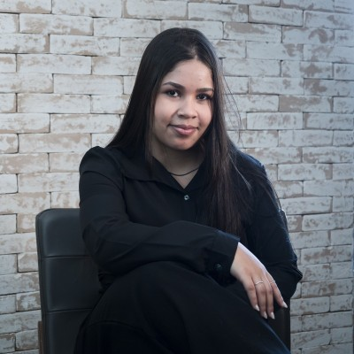

Análise E-commerce Olist
Análise executiva de ~93 mil pedidos reais (Tech Challenge FIAP): desempenho comercial, logística e satisfação, com recomendações estratégicas.
Conecto dados, inteligência artificial e automação para transformar operação em estratégia — gerando eficiência, previsibilidade e impacto real no negócio.

Comecei minha carreira como estagiária na área operacional. Ao longo da trajetória, evoluí até assumir a liderança de faturamento — deixando de apenas executar processos para repensar como eles funcionam.
Hoje lidero um time e sou responsável pela eficiência do faturamento em seguros de saúde, vida e odontológico, com foco em escala e melhoria contínua. Venho impulsionando essa transformação com dados e tecnologia:
→ Redução de até 80% do tempo operacional com automações em Python, IA e RPA
→ Desenvolvimento de agentes inteligentes e soluções com IA Generativa
→ Integração de sistemas via APIs e soluções em Google Cloud
→ Criação de dashboards e indicadores para apoio à decisão
Um conjunto que cobre dados, cloud, desenvolvimento e a ponte entre negócio e tecnologia.
Credenciais de Google, Microsoft e parceiros — sempre acompanhando a evolução de dados e IA.
De análise de dados e IA a desenvolvimento em várias linguagens. Tudo com código aberto no GitHub.
Análise executiva de ~93 mil pedidos reais (Tech Challenge FIAP): desempenho comercial, logística e satisfação, com recomendações estratégicas.
Modelo de Machine Learning que prevê quais clientes vão deixar de comprar, com ROC AUC de 0,91 e drivers de negócio interpretáveis.
Painel analítico interativo que roda no navegador, com filtros em tempo real e visualizações dinâmicas.
Análise de contas a receber inspirada no meu dia a dia: aging de recebíveis, DSO e inadimplência por segmento, em SQL.
Ferramenta de linha de comando em C++ que calcula estatística descritiva e histograma, usando a STL.
Aplicativo de segurança colaborativa em Java/Android: usuários relatam e recebem alertas em tempo real sobre áreas de risco.
Para parcerias, projetos ou uma boa troca sobre dados e IA, é só me chamar por um dos canais abaixo.